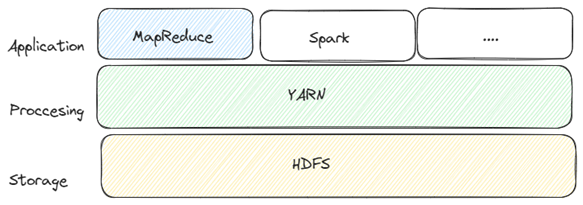

Capítulo 3. Ecosistema de Hadoop
Estructura de Hadoop
Estructura de Hadoop
Apache Hadoop dispone de diversos módulos que amplían sus funcionalidades. Entre los más importantes destacan HDFS, YARN, Hadoop Common y MapReduce, que constituyen el núcleo del ecosistema Hadoop.
YARN (Yet Another Resource Negotiator) actúa como el sistema operativo del clúster Hadoop. Su función principal consiste en administrar los recursos de todas las máquinas que forman el clúster y decidir dónde debe ejecutarse cada aplicación.
Además de asignar recursos, YARN monitoriza continuamente el estado de los nodos, gestiona el acceso de los usuarios y supervisa la correcta ejecución de las tareas.

Figura 10. Arquitectura general de YARN.
Divide un trabajo de gran tamaño en múltiples tareas más pequeñas para que puedan ejecutarse de forma paralela sobre diferentes nodos del clúster.
Administra la memoria, CPU y almacenamiento disponibles en el clúster, asignando los recursos necesarios a cada aplicación.
Para separar la planificación de tareas del procesamiento MapReduce, YARN incorpora dos procesos principales.
Existe un único ResourceManager por clúster y es el responsable de administrar todos los recursos disponibles.
Existe un NodeManager en cada nodo del clúster.
Cuando un usuario envía una aplicación al clúster, el ResourceManager asigna un contenedor con los recursos necesarios (CPU, memoria y almacenamiento). Posteriormente, el NodeManager ejecuta la aplicación dentro de dicho contenedor y supervisa toda su ejecución.
Una de las principales ventajas de YARN es que permite ejecutar diferentes motores de procesamiento, además de MapReduce.
Motor de procesamiento distribuido en memoria que acelera el análisis de grandes volúmenes de datos.
Framework especializado en procesamiento continuo y análisis de datos en tiempo real.
Sistema distribuido para el procesamiento de flujos de datos con baja latencia.
YARN constituye el núcleo de la gestión de recursos en Hadoop. Gracias a su arquitectura distribuida permite administrar miles de nodos, ejecutar múltiples frameworks de procesamiento y optimizar la utilización del clúster, convirtiéndose en uno de los componentes fundamentales del ecosistema Big Data.